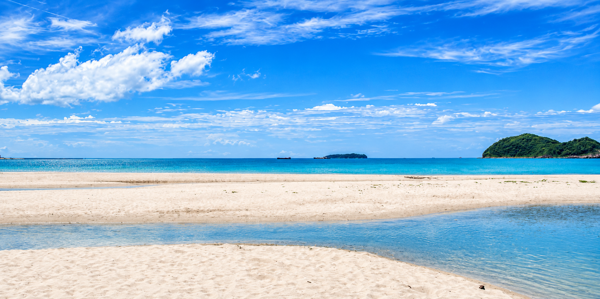
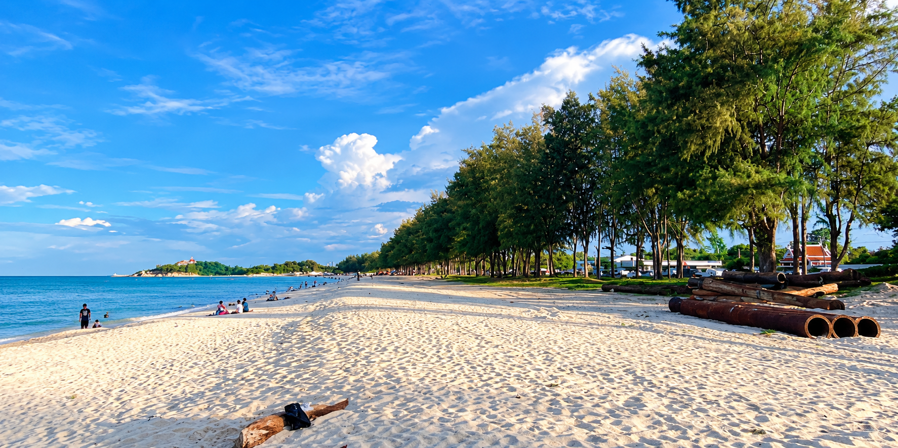
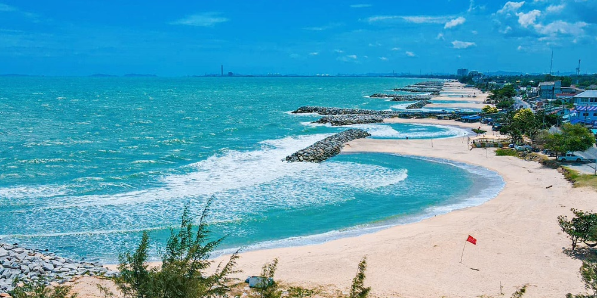
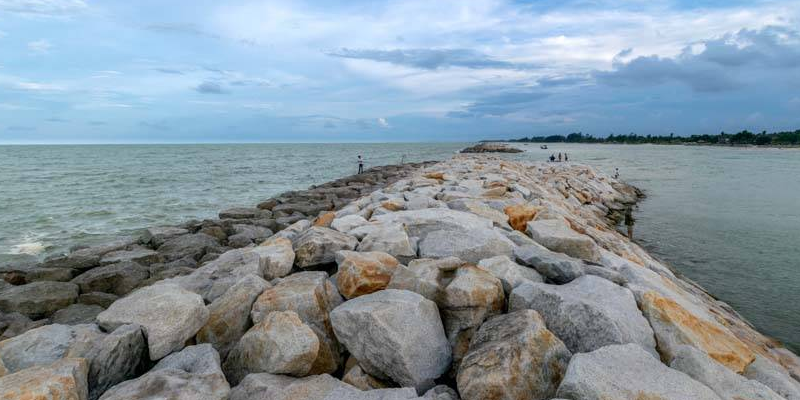

รวมชายหาดที่น่าสนใจทั้งในตัวเมืองและใกล้เคียง

ชายหาดสัญลักษณ์ของจังหวัดสงขลา มีทรายขาวละเอียดที่เรียกว่า “ทรายแก้ว” จุดเด่นคือรูปปั้นนางเงือกทอง และสามารถมองเห็นเกาะหนู–เกาะแมวได้ เหมาะสำหรับถ่ายรูป เดินเล่น และพักผ่อน
ดูรายละเอียดเพิ่มเติม →
ชายหาดยาวต่อเนื่องจากหาดสมิหลา มีถนนเลียบชายหาดร่มรื่นด้วยทิวสนทะเล บรรยากาศสงบกว่า เหมาะกับการเดินเล่น ปิกนิก หรือวิ่งออกกำลังกาย
ดูรายละเอียดเพิ่มเติม →
ชายหาดอีกแห่งที่อยู่ใกล้ตัวเมืองสงขลา มีบรรยากาศเงียบสงบ เหมาะสำหรับผู้ที่ต้องการพักผ่อนแบบส่วนตัวมากกว่าหาดท่องเที่ยวหลัก

ชายหาดที่อยู่ทางทิศเหนือของตัวเมือง มีลักษณะเป็นหาดทรายยาว เป็นที่นิยมของคนท้องถิ่นในการมาพักผ่อนช่วงเย็นและวันหยุด
นอกจากหาดทะเลอ่าวไทยแล้ว รอบทะเลสาบสงขลายังมีจุดพักผ่อนและชมวิวน้ำจืด–น้ำกร่อย ที่ให้บรรยากาศแตกต่างจากชายหาดทั่วไป เหมาะกับการนั่งชมพระอาทิตย์ตก